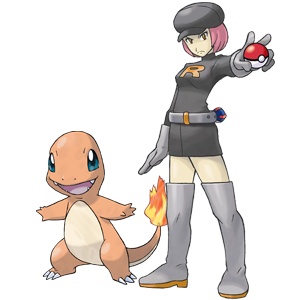

La Team Rocket a capturé Salamèche!
Pour sauver le pauvre Pokémon...
1. In French, introduce yourself to the secretary. Be sure to ask for her name how she is doing. Share at least two things about yourself (preferences, personality, birthday, family, etc.). Then, ask her at least two questions of your choosing. They can be ones we saw in class or you can create your own. Note: If our French-speaking secretary is not in the office, ask for the alternative activity.2. When you finish your conversation, ask for her signature in your Marceldex. You can use the phrase, Signez, s’il vous plait. (see-nyay see voo play) Be sure to thank her!
3. Take what you found out about the secretary and write a short 1-2 sentence summary. [contact-form to="thoy@broward.edu"][contact-field label="Name" type="name" required="1" /][contact-field label="Secretary's Name" type="text" required="1" /][contact-field label="Summary" type="textarea" required="1" /][/contact-form]4. When you are finished, be sure to submit, then click here!